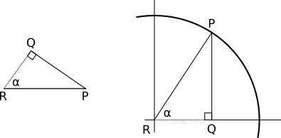

Mat (Matte) Nesneler ve Diffuse Yansıma
Mat (matte) yüzeyler, ışığı her yöne eşit bir şekilde yayarak, yüzeyin mat görünmesini sağlarlar. Bu tür yüzeylerde, nereden bakarsanız bakın, aynı rengi görürsünüz. Örneğin, bir duvara baktığınızda, farklı açılardan baktığınızda bile rengin değişmediğini fark edersiniz. Ancak, ışığın geliş açısına göre yüzeyin parlaklığı değişir. Işık dik geldiğinde yüzey daha parlak görünürken, ışık açılı geldiğinde yüzey daha loş bir görünüm alır. Bu durum, aynı enerjinin daha geniş bir alana yayılması nedeniyle oluşur.

Yüzey Normali (Surface Normal)
Yüzey normali, bir yüzeye dik olan birim bir vektördür ve genellikle \( \vec{N} \) ile gösterilir. Bu vektörün uzunluğu 1'dir ve her noktanın kendi yüzey normali vardır. Yüzey normali, ışığın yüzeye hangi açıyla geldiğini belirlemek için kullanılır.
Diffuse Formülünü Türetme
Işık yönü \( \vec{L} \), yüzey normali \( \vec{N} \) ve aralarındaki açı \( \alpha \) olsun.


PQR dik üçgeni üzerinden türetme yapılabilir:
\[ \cos(\alpha) = \frac{I}{A} \]Trigonometri bilgisi olmayanlar için, cos fonksiyonu, bir açının komşu kenarının hipotenüse oranını verir.
Nokta çarpımı (dot product) kullanarak:
\[ \cos(\alpha) = \frac{\langle \vec{N}, \vec{L} \rangle}{|\vec{N}| \cdot |\vec{L}|} \]Sonuçta elde edilen formül:
\[ \frac{I}{A} = \frac{\langle \vec{N}, \vec{L} \rangle}{|\vec{N}| \cdot |\vec{L}|} \]Dikkat: Eğer \( \cos(\alpha) < 0 \) ise (açı > 90 derece), bu durumda ışık yüzeyin arkasını aydınlatıyor demektir ve bu durumda 0 olarak alınır.
Tam Diffuse Aydınlatma Denklemi
Diffuse aydınlatma, her bir ışık kaynağından gelen ışığın yüzeye nasıl etki ettiğini hesaplamamızı sağlar. Aydınlatma denklemi şu şekildedir:
\[ I_P = I_A + \sum_{i=1}^{n} I_i \cdot \frac{\langle \vec{N}, \vec{L_i} \rangle}{|\vec{N}| \cdot |\vec{L_i}|} \]Burada:
- \( I_P \): Piksel üzerinde toplam aydınlatma
- \( I_A \): Ortam (ambient) ışık yoğunluğu
- \( I_i \): i'inci ışık kaynağı yoğunluğu
- \( \vec{N} \): Yüzey normali
- \( \vec{L_i} \): i'inci ışık kaynağının yön vektörü
Negatif terimler (açı > 90 derece) denkleme eklenmez.
Küre Normalleri
Küre yüzeyine bir nokta \( P \) ve kürenin merkezi \( C \) olduğunda, küre normali şu şekilde hesaplanır:
\[ \vec{N} = \frac{P - C}{|P - C|} \]Bu, noktanın küre merkezine olan vektörünün normalleştirilmesiyle elde edilir.

Pseudocode: ComputeLighting ve TraceRay Güncelleme
Diffuse aydınlatmayı hesaplamak için iki temel fonksiyon güncellenecek: ComputeLighting ve TraceRay.
ComputeLighting Fonksiyonu
// ComputeLighting fonksiyonu, belirli bir noktada yüzeyin aydınlatmasını hesaplar.
float ComputeLighting(Vec3 P, Vec3 N)
{
float intensity = 0.0f; // Başlangıç yoğunluğu
for (int i = 0; i < LIGHT_COUNT; i++) {
if (lights[i].type == LIGHT_AMBIENT) {
// Ambient ışık eklenir.
intensity += lights[i].intensity;
} else {
Vec3 L;
if (lights[i].type == LIGHT_POINT)
L = vec3_sub(lights[i].position, P);
else
L = lights[i].direction;
float n_dot_l = vec3_dot(N, L);
if (n_dot_l > 0) {
intensity += lights[i].intensity * n_dot_l / (vec3_len(N) * vec3_len(L));
}
}
}
return intensity;
}
Bu fonksiyon, her ışık kaynağı için yüzeyin aldığı ışık yoğunluğunu hesaplar ve toplar.
TraceRay Fonksiyonu
// TraceRay fonksiyonu, en yakın kesişim noktasını bulur ve o noktadaki rengi döndürür.
Color TraceRay(Vec3 O, Vec3 D, float t_min, float t_max)
{
float closest_t = FLT_MAX;
int closest_idx = -1;
for (int i = 0; i < SPHERE_COUNT; i++) {
float t1, t2;
IntersectRaySphere(O, D, spheres[i], &t1, &t2);
if (t1 >= t_min && t1 <= t_max && t1 < closest_t) { closest_t = t1; closest_idx = i; }
if (t2 >= t_min && t2 <= t_max && t2 < closest_t) { closest_t = t2; closest_idx = i; }
}
if (closest_idx == -1) return RAYWHITE;
Vec3 P = vec3_add(O, vec3_scale(D, closest_t));
Vec3 N = vec3_sub(P, spheres[closest_idx].center);
N = vec3_norm(N);
float light = ComputeLighting(P, N);
if (light > 1.0f) light = 1.0f;
unsigned char cr = (unsigned char)(spheres[closest_idx].r * light);
unsigned char cg = (unsigned char)(spheres[closest_idx].g * light);
unsigned char cb = (unsigned char)(spheres[closest_idx].b * light);
return (Color){cr, cg, cb, 255};
}
Bu fonksiyon, ışının en yakın kesişim noktasını bulur ve o noktadaki yüzeyin rengine bağlı olarak aydınlatmayı hesaplar.

Raylib Kodu
Şimdi, Raylib kullanarak basit bir diffuse aydınlatma uygulaması yapacağız. Aşağıdaki kod, raytracing algoritmamıza diffuse aydınlatmayı ekler.
#include "raylib.h"
#include <math.h>
#include <float.h>
/*
* Ornek 05 - Diffuse (Yayinik) Aydinlatma ile Isin Izleyici
*
* Onceki basit raytracer'a diffuse aydinlatma modeli ekler.
* Isik kaynaklari: 1 ambient, 1 noktasal, 1 yonlu
* Her pikselde yuzeyin normali hesaplanir ve isik
* yogunlugu dot(N, L) ile belirlenir.
*/
// ---- Vektor Islemleri ----
typedef struct { float x, y, z; } Vec3;
Vec3 vec3_add(Vec3 a, Vec3 b) { return (Vec3){a.x+b.x, a.y+b.y, a.z+b.z}; }
Vec3 vec3_sub(Vec3 a, Vec3 b) { return (Vec3){a.x-b.x, a.y-b.y, a.z-b.z}; }
Vec3 vec3_scale(Vec3 v, float s) { return (Vec3){v.x*s, v.y*s, v.z*s}; }
float vec3_dot(Vec3 a, Vec3 b) { return a.x*b.x + a.y*b.y + a.z*b.z; }
float vec3_len(Vec3 v) { return sqrtf(vec3_dot(v, v)); }
Vec3 vec3_norm(Vec3 v) { float l = vec3_len(v); return (Vec3){v.x/l, v.y/l, v.z/l}; }
// ---- Kure ----
typedef struct {
Vec3 center;
float radius;
unsigned char r, g, b;
} Sphere;
#define SPHERE_COUNT 4
Sphere spheres[SPHERE_COUNT] = {
{{ 0.0f, -1.0f, 3.0f}, 1.0f, 255, 0, 0}, // Kirmizi
{{ 2.0f, 0.0f, 4.0f}, 1.0f, 0, 0, 255}, // Mavi
{{-2.0f, 0.0f, 4.0f}, 1.0f, 0, 255, 0}, // Yesil
{{ 0.0f,-5001.0f,0.0f}, 5000.0f, 255, 255, 0}, // Sari zemin
};
// ---- Isik Kaynaklari ----
typedef enum { LIGHT_AMBIENT, LIGHT_POINT, LIGHT_DIRECTIONAL } LightType;
typedef struct {
LightType type;
float intensity;
Vec3 position; // noktasal icin
Vec3 direction; // yonlu icin
} Light;
#define LIGHT_COUNT 3
Light lights[LIGHT_COUNT] = {
{ LIGHT_AMBIENT, 0.2f, {0,0,0}, {0,0,0} },
{ LIGHT_POINT, 0.6f, {2,1,0}, {0,0,0} },
{ LIGHT_DIRECTIONAL, 0.2f, {0,0,0}, {1,4,4} },
};
// ---- Isin-Kure Kesisimi ----
void IntersectRaySphere(Vec3 O, Vec3 D, Sphere s, float *t1, float *t2)
{
Vec3 CO = vec3_sub(O, s.center);
float a = vec3_dot(D, D);
float b = 2.0f * vec3_dot(CO, D);
float c = vec3_dot(CO, CO) - s.radius * s.radius;
float disc = b*b - 4*a*c;
if (disc < 0) { *t1 = FLT_MAX; *t2 = FLT_MAX; return; }
float sq = sqrtf(disc);
*t1 = (-b + sq) / (2*a);
*t2 = (-b - sq) / (2*a);
}
// ---- Diffuse Aydinlatma Hesabi ----
float ComputeLighting(Vec3 P, Vec3 N)
{
float intensity = 0.0f;
for (int i = 0; i < LIGHT_COUNT; i++) {
if (lights[i].type == LIGHT_AMBIENT) {
intensity += lights[i].intensity;
} else {
Vec3 L;
if (lights[i].type == LIGHT_POINT)
L = vec3_sub(lights[i].position, P);
else
L = lights[i].direction;
float n_dot_l = vec3_dot(N, L);
if (n_dot_l > 0) {
intensity += lights[i].intensity * n_dot_l / (vec3_len(N) * vec3_len(L));
}
}
}
return intensity;
}
// ---- Isin Izleme ----
Color TraceRay(Vec3 O, Vec3 D, float t_min, float t_max)
{
float closest_t = FLT_MAX;
int closest_idx = -1;
for (int i = 0; i < SPHERE_COUNT; i++) {
float t1, t2;
IntersectRaySphere(O, D, spheres[i], &t1, &t2);
if (t1 >= t_min && t1 <= t_max && t1 < closest_t) { closest_t = t1; closest_idx = i; }
if (t2 >= t_min && t2 <= t_max && t2 < closest_t) { closest_t = t2; closest_idx = i; }
}
if (closest_idx == -1) return RAYWHITE;
Vec3 P = vec3_add(O, vec3_scale(D, closest_t));
Vec3 N = vec3_sub(P, spheres[closest_idx].center);
N = vec3_norm(N);
float light = ComputeLighting(P, N);
if (light > 1.0f) light = 1.0f;
unsigned char cr = (unsigned char)(spheres[closest_idx].r * light);
unsigned char cg = (unsigned char)(spheres[closest_idx].g * light);
unsigned char cb = (unsigned char)(spheres[closest_idx].b * light);
return (Color){cr, cg, cb, 255};
}
// ---- Canvas -> Viewport ----
Vec3 CanvasToViewport(int cx, int cy, int cw, int ch)
{
return (Vec3){ (float)cx/(float)cw, (float)cy/(float)ch, 1.0f };
}
int main(void)
{
const int CW = 600, CH = 600;
InitWindow(CW, CH, "Ornek 05 - Diffuse Aydinlatma Raytracer");
Image img = GenImageColor(CW, CH, RAYWHITE);
Vec3 O = {0, 0, 0};
for (int x = -CW/2; x < CW/2; x++) {
for (int y = -CH/2; y < CH/2; y++) {
Vec3 D = CanvasToViewport(x, y, CW, CH);
Color c = TraceRay(O, D, 1.0f, FLT_MAX);
int sx = x + CW/2;
int sy = CH/2 - y;
if (sx >= 0 && sx < CW && sy >= 0 && sy < CH)
ImageDrawPixel(&img, sx, sy, c);
}
}
Texture2D tex = LoadTextureFromImage(img);
UnloadImage(img);
SetTargetFPS(60);
while (!WindowShouldClose()) {
BeginDrawing();
ClearBackground(RAYWHITE);
DrawTexture(tex, 0, 0, WHITE);
DrawRectangle(0, 0, CW, 55, Fade(BLACK, 0.6f));
DrawText("Diffuse Aydinlatma ile Raytracer", 10, 8, 22, WHITE);
DrawText("Ambient:0.2 + Point(2,1,0):0.6 + Directional(1,4,4):0.2",
10, 33, 14, LIGHTGRAY);
EndDrawing();
}
UnloadTexture(tex);
CloseWindow();
return 0;
}
Bu Satır Ne Yapıyor?
Vektör İşlemleri
Vektör işlemleri için kullanılan fonksiyonlar, 3D vektörler üzerinde temel matematiksel işlemleri yapmamızı sağlar. Örneğin, vec3_add fonksiyonu iki vektörü toplar ve yeni bir vektör döndürür.
Küre Tanımlamaları
Küre yapıları, kürelerin merkezini, yarıçapını ve renklerini saklar. SPHERE_COUNT, sahnede kaç tane küre olduğunu belirtir.
Işık Kaynakları
Işık kaynakları, farklı türlerde (ambient, noktasal ve yönlü) tanımlanır ve her birinin kendi yoğunluğu, pozisyonu ve yönü vardır.
İntersectRaySphere Fonksiyonu
Bu fonksiyon, bir ışının bir küreyle kesişip kesişmediğini kontrol eder ve kesişim noktalarını hesaplar.
Diffuse Aydınlatma Hesabı
ComputeLighting fonksiyonu, belirli bir noktada yüzeyin aldığı toplam ışığı hesaplar. İlk olarak ambient ışığı ekler, ardından her diğer ışık kaynağı için ışık yönü hesaplanır ve yüzey normali ile olan açısı dikkate alınarak ışık katkısı eklenir.
Işın İzleme
TraceRay, her bir pikselde ışınların kürelerle kesişimini kontrol eder ve en yakın kesişimi bulur. Kesişim noktasındaki yüzey normali ve aydınlatma hesaplanarak nihai renk belirlenir.
Kodda kırmızı kürenin merkezini (0, -1, 3) yerine (0, 0, 3) yapın. Kırmızı kürenin sahnede nereye kaydığını gözlemleyin.
Bu kapsamlı açıklamalar ve örneklerle, diffuse yansımanın temellerini ve uygulamasını anlamış olmalısınız. Umarım bu bilgiler ışığında kendi raytracing projelerinizi geliştirebilirsiniz!